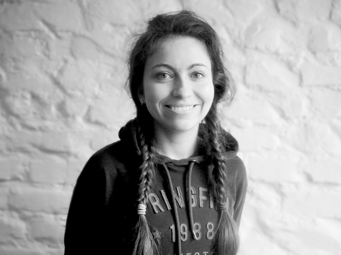
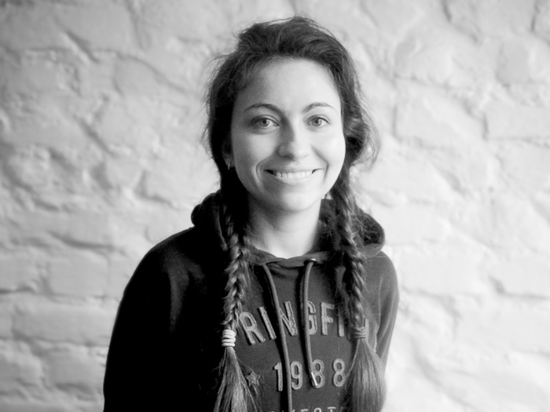

Команда A-Z
Команда A-Z – это компания людей, объединённых не только любимым общим делом, но и разделяющих схожие интересы, ценности и мировосприятие. Наша команда формируется из людей, для которых английский язык – это не столько профессия, сколько инструмент приобретения новых знаний, проводник в выстраивании знакомств, источник для вдохновения. Ни один из нас не стремится стать преподавателем, и привычный формат обучения с моделью «учитель-ученик» наводит на нас тоску. Мы хотим продолжать узнавать новое вместе с вами, учиться у вас и в результате нашего общения развиваться и обогащаться.
Процесс обучения всегда складывается быстрее и продуктивнее, если участвующие в нём люди интересны друг другу и им есть, что обсудить, поэтому мы будем рады немного рассказать о себе.

Ая
основатель, преподаватель
Меня зовут Ая, и мне 25.
A-Z появился практически сам собой. Вокруг меня было несколько прекрасных талантливых преподавателей, которым не удавалось найти место, где им позволяли бы работать в своём формате, и большое количество не менее прекрасных и интересных людей, мечтающих говорить по-английски, но с большим подозрением относящихся к курсам английского. Дело оставалось за малым – помочь им встретиться: так и возник творческий проект по изучению английского языка A-Z English.
Сама я изучала английский с детского садика и продолжаю до сих пор. В детстве в доме моих родителей практически постоянно были иностранцы, поэтому к звучанию другого языка я привыкла еще тогда. Школа, в которой я училась, позиционировала себя как гимназия с углублённым изучением иностранных языков, и английский нам преподавали до пяти часов в неделю. Я окончила Смольный институт свободных искусств и наук, который знаменит тем, что является первым в России высшим учебным заведением с либеральной системой образования и основан совместно СПбГУ и Бард колледжом (США). Моя специальность – кино и видео, однако в область моих интересов входят психология и психоанализ, гендерные теории, социология, фотография.
Вся моя работа была так или иначе связана с общением на английском: я работала официанткой в популярном среди иностранцев месте, занималась переводом и субтитрованием фильмов, организовывала международные фестивали и съёмки зарубежных фильмов, участвовала в международных проектах, и за это время я поняла, что очень люблю общаться с людьми из других стран.
До возникновения проекта A-Z моя преподавательская деятельность насчитывала 6 лет частной практики (с людьми от 10 до 50 лет, уровни от beginner до upper-intermediate) и один год групповой практики в Газпром-банке (уровни pre-intermediate и upper-intermediate, группы от 4 до 8 человек).
Для меня A-Z стал удивительной возможностью воплощать все свои идеи в реальность, окружать себя людьми, готовыми вписываться в самые сумасшедшие затеи, постоянно находиться в процессе познания и при этом постоянно чувствовать себя на своём месте. A-Z – это формат, в котором можно воспринимать мир, и надеюсь, все участники проекта будут разделять его вместе с нашей командой.
Паша
преподаватель
Привет! Меня зовут Паша!
- - Искусствовед-переводчик по образованию;
- - Преподавать начал в школе русского языка для иностранцев;
- - Работал в гостинице;
- - Принимаю участие в работе кинофестивалей, делаю переводы и занимаюсь субтитрированием фильмов;
- - Время от времени занимаюсь письменным переводом;
- - Несколько лет подряд преподаю английский язык по коммуникативной методике (общий разговорный, бизнес, подготовка к экзаменам).
Я люблю кино и визуальные искусства в целом и в данный момент пишу диссертационную работу. Надеюсь в будущем работать в сфере культуры или преподавать историю искусства в России или за границей.
Самое главное в изучении языка, на мой взгляд, не бояться совершить ошибку. А чтобы не бояться, нужно как можно больше говорить. И слушать. И говорить. И снова слушать.
 
Стефания
преподаватель
Меня зовут Стефания, мне 27 лет, английский вошёл в мою жизнь в раннем детстве, когда на заре перестройки несколько воодушевлённых молодых родителей в Самаре решили объединиться и учить язык в формате “английских чаепитий”. С тех пор я изучала английский в школе, на курсах и во всех вузах, где довелось учиться. Иностранный язык я представляю не столько как систему, набор слов и грамматических правил, но как особое пространство, которое можно осваивать в себе, как развитие новой грани воображения и восприятия, которая наполняет тебя и обогащает твою реальность.
Первый раз я забыла о том, что “языки это трудно”, когда меня захватила первая, прочитанная в оригинале книга. Впоследствии моей специальностью стала англо-американская литература, я закончила Факультет Свободных искусств и наук СПбГУ, чьё сотрудничество с Бард-колледжем показало мне огромные возможности интерактивных методик образования, а ещё подарило первую поездку в США, где с тех пор я провожу каждое второе лето, совершенствуя язык и исследуя восточное побережье этой противоречивой страны.
Знакомясь и работая с людьми с самыми разными уровнями английского по всему миру, я узнала, что секрет прославленного феномена “включения” в язык, когда ты попадаешь в среду, заключается не в среде как таковой, а в удовольствии от освоения новых возможностей. Действительно, ты вынужден прибегать к языку, когда впервые приехал на год в другую страну или самостоятельно путешествуешь по Европе или США (как это было в моём случае), но, как оказалось, язык включается и тогда, когда ты работаешь официантом в месте, где всегда полно туристов с разных концов земли, и тогда, когда случайно встречаешь потерявшихся чудаков-иностранцев в родном городе, и вы вместе отправляетесь в бар.
Область моих интересов сегодня лежит в развитии потенциала человека, поиска своего дела, отношений с собой, проблем перфекционизма и креативности, движения к осознанной и наполненной жизни, которые я осваиваю через интереснейшие ресурсы англоязычного интернета. Я считаю, что во многом причина трудностей с языком - психологический барьер, и разница между тем, чтобы мучительно переводить в голове и потоком несовершенной, но живой речи в том, что удовольствие от общения превышает стресс от новизны и боязни сделать ошибку. С тех пор я практикую это на себе и учу этому младших школьников, с которыми занимаюсь английским в качестве скайп-репетитора, тем самым продолжая традицию “английских чаепитий”, то есть весёлого и комфортного вживания в новый язык.
Настя
преподаватель
Меня зовут Настя.
Я закончила философский факультет СПбГУ, затем 3 года работала техническим переводчиком в сфере проектирования и строительства, поэтому могу много рассказать про сваи и балки, но предпочитаю Second Conditional и Future Perfect Continuous. Сейчас продолжаю обучение в ЕУ СПб по направлению социолингвистика и преподаю английский язык.

Женя
преподаватель детских групп
Меня зовут Женя, и мне 25.
Английский я изучала с детства — сначала со старшей сестрой, потом — в школе и в университете и, наконец, в большой жизни: в поездках, в книгах, в фотографиях, музыке и кино.
В течение двух лет вела занятия для детей в детском саду «Адаин Ло» (возраст детей — от 3 до 7), со 2 курса занимаюсь частной преподавательской практикой.
Мне больше всего нравится вести детские группы, потому что на этих занятиях можно играть. А ещё — рисовать, петь, шуметь, лепить из пластилина, стоять на голове и хлопать ушами. И при этом — учить английский. С детства приучиться не бояться его, подружиться со звучанием английской речи, запомнить базовые слова и ключевые конструкции, пока это делается так легко и «само собой».
Инна
директор по развитию
Меня зовут Инна, и больше всего на свете я люблю организовывать и администрировать проекты.
С Аей мы познакомились в августе 2015, и мне сразу понравилась ее страсть к изучению английского, которую она передает своим ученикам. Через некоторое время возникло желание присоединиться к проекту A-Z English, чтобы участвовать в его развитии.
Мне 29, я также являюсь совладельцем event-агентства Orgteam, а до этого много времени посвятила интернет-маркетингу. Я с детства изучаю английский, активно путешествую, люблю нетворкинг, обожаю узнавать что-нибудь новое. A-Z English для меня — это пространство для идей, расширения возможностей и любви ко всему, выходящему за рамки обыденности.
Катарина
управляющий
Привет, меня зовут Катарина.
A-Z начался для меня с небольшой идеи, к которой меня пригласила присоединиться Ая. Я здесь с самого старта, и этот проект для меня давно стал родным. Сейчас я занимаюсь всеми организационными вопросами клуба.
Самое ценное в A-Z — это, безусловно, команда. Самобытные, творческие и разносторонние люди, которых связывает общая любовь к языку. Работа с которыми приносит ощущение уверенности и легкости одновременно.
Основное для меня качество проекта — это свобода. Мысли, слова и самовыражения. Каждый здесь неповторим и уникален, и это то, что для нас крайне важно.